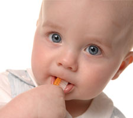

Childrens Dentistry in Evansville, Indiana • East Office (812) 479 - 8609 • West Office (812) 401-6095


The primary, or "baby," teeth play a crucial role in dental development. Without them, a child cannot chew food properly and has difficulty speaking clearly. The self-image that healthy teeth give a child is immeasurable. Primary teeth are vital to development of the jaws and for guiding the permanent (secondary) teeth into place when they replace the primary teeth beginning around age 6.
Since primary teeth guide the permanent teeth into place, infants with missing primary teeth or infants who prematurely lose primary teeth may require a space maintainer, a device used to hold the natural space open. Without a maintainer, the teeth can tilt toward the empty space and cause permanent teeth to come in crooked. Missing teeth should always be mentioned to your family dentist. The way your child cares for his/her primary teeth plays a critical role in how he/she treats the permanent teeth. Children and adults are equally susceptible to plaque and gum problems—hence, the need for regular care and dental checkups.
Normally the first tooth erupts between ages 6 to 12 months. Gums are sore, tender and sometimes irritable until the age of 3. Rubbing sore gums gently with a clean finger, the back of a cold spoon or a cold, wet cloth helps soothe the gums. Teething rings work well, but avoid teething biscuits—they contain sugar that is not good for baby teeth.
While your baby is teething, it is important to monitor the teeth for signs of baby bottle decay. Examine the teeth, especially on the inside or the tongue side, every two weeks for dull spots (whiter than the tooth surface) or lines. A bottle containing anything other than water and left in an infant's mouth while sleeping can cause decay. This happens because sugar in the liquid mixes with bacteria in dental plaque, forming acids that attack the tooth enamel. Each time a child drinks liquids containing sugar, acids attack the teeth for about 30 minutes. When awake, saliva carries away the liquid. During sleep, the saliva flow significantly decreases and liquids pool around the child's teeth for long periods, covering the teeth in acids.